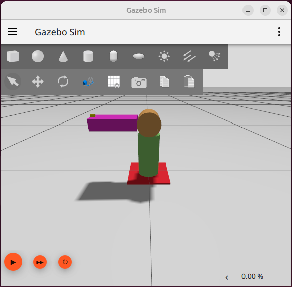
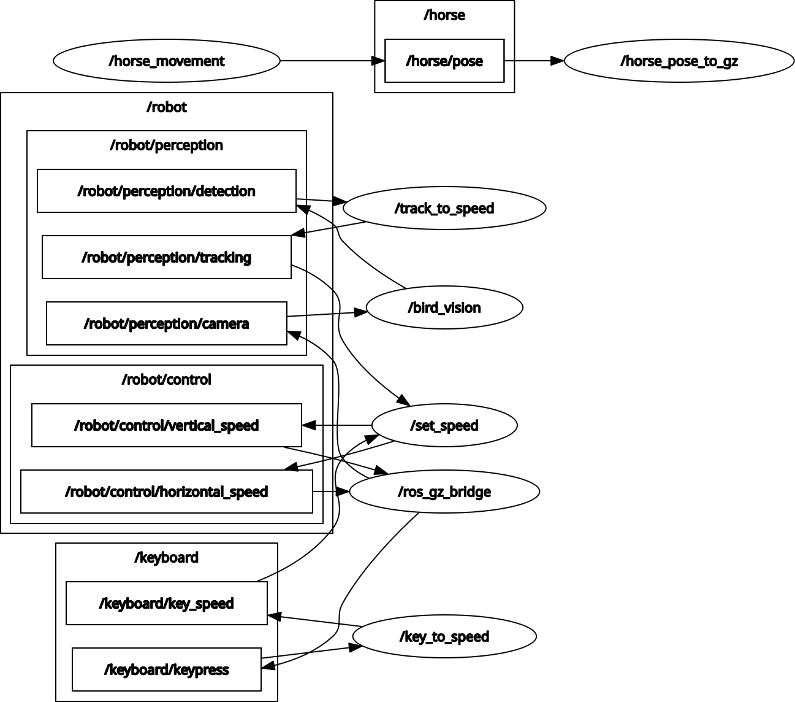

Résumé du projet
run_chicken est un projet robotique dont le but est de développer un canon à eau repousseur de poules. L'objectif est d'empêcher les poules — et uniquement les poules — d'accéder à certains endroits, comme une terrasse, en les dissuadant grâce à un jet d'eau automatique.
Phase actuelle
Le projet est actuellement en phase de développement sur simulateur : ROS2 Jazzy et Gazebo Harmonic.
Prochaines étapes
- Ajout de divers capteurs et actionneurs
- Implémentation du suivi de trajectoires
- Conception du prototype sur Solidworks
- Impression 3D du châssis et des pièces mécaniques
- Réalisation d'un prototype physique avec un Raspberry Pi
Avancée du projet
1. Création du robot dans Gazebo
J'ai créé une simulation de ce futur robot sous la forme d'un fichier .urdf comprenant deux axes de rotation et une caméra. Ce modèle est ensuite placé dans un monde .sdf Gazebo pour tester ses mouvements dans un environnement virtuel.

2. Communication ROS2 ↔ Gazebo via un bridge
La simulation Gazebo communique avec ROS2 via un bridge bidirectionnel : les données capteurs (caméra, commandes clavier — et plus tard détecteur de distance et capteur de contact) sont publiées sur des topics Gazebo convertis sur des topics ROS2, tandis qu'inversement, le robot reçoit les commandes en s'abonnant aux topics correspondants.

3. Détection d'animaux avec YOLOv8 et OpenCV
J'ai intégré le modèle d'intelligence artificielle YOLOv8 pour reconnaître les animaux en temps réel et récupérer des données utiles (position sur l'image, boîte englobante…) grâce à OpenCV. Il existe des versions plus récentes de YOLO, mais le projet ayant pour vocation d'être importé sur Raspberry Pi, j'ai préféré éviter les modèles les plus lourds.
4. Intégration du code IA dans ROS2 / Gazebo
Ce code de détection a été intégré dans un nœud ROS2 afin de le tester directement dans Gazebo. Pour ce test, un cheval a été utilisé à la place d'une poule (un modèle de cheval étant disponible dans Gazebo Fuel), afin de vérifier que le robot est bien capable de suivre un animal en mouvement.
Contact
Nicolas BRANAS
Ingénieur en Robotique
nico.branas@gmail.com
06 58 40 83 90